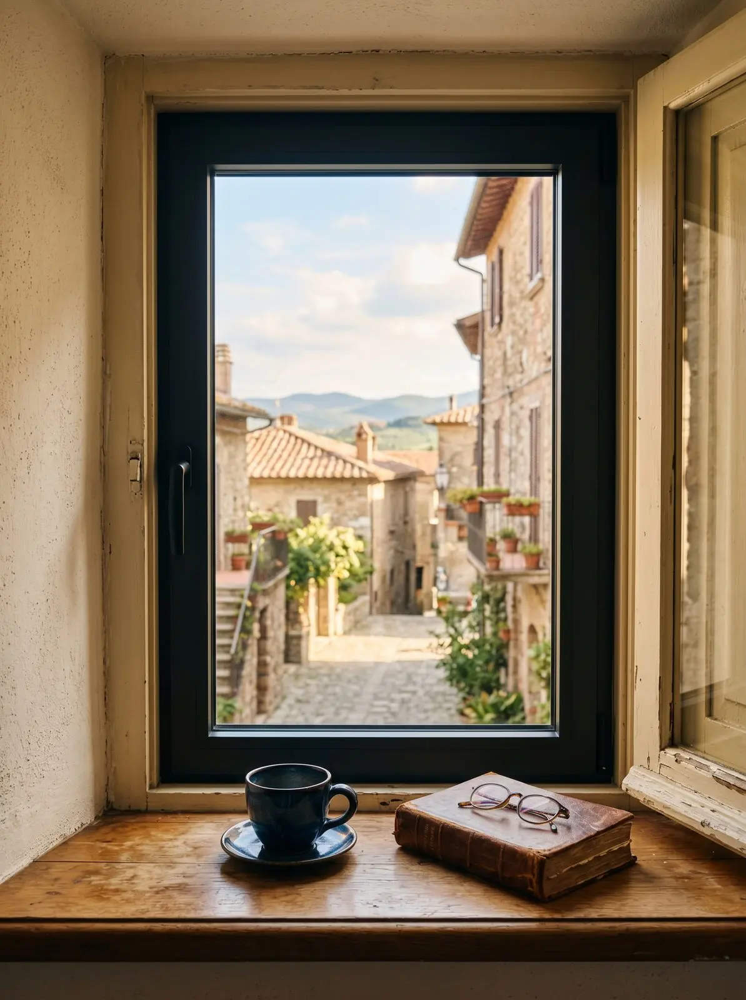

Serramentista a Milano Sud.
Il Naviglio Grande unisce Gaggiano e Milano Sud.
Lavoriamo dalla Barona ai Navigli, da Gratosoglio al Vigentino, con i nostri tecnici e i nostri posatori. Dalla nostra officina alla Barona sono circa 15 km lungo il Naviglio.
In quali quartieri lavoriamo?
Barona e Ronchetto sul Naviglio; Navigli e Porta Genova; Gratosoglio e Stadera; Vigentino, Ripamonti e Chiaravalle.
Che infissi servono nelle case di Milano Sud?
Nelle case di ringhiera dei Navigli si lavora su finestre storiche, spesso con vincoli di facciata: il Minimale, effetto ferrofinestra, rispetta il disegno originale e isola come un infisso moderno. Nei grandi condomini di Gratosoglio e della Barona servono isolamento e cassonetti coibentati. Sulle strade di scorrimento serve il vetro acustico.
Tre interventi tipici.
Casa di ringhiera
Minimale effetto ferrofinestra, nel rispetto del disegno della facciata.
Condominio a Gratosoglio
Safe Window con triplo vetro sulle esposizioni a nord e cassonetti coibentati.
Appartamento sui Navigli
Vetro acustico e zanzariere su misura per le sere d’estate.
Ho cambiato finestre e persiane di una casa vecchia a Milano: adesso finalmente non sento più l'incessante rumore del traffico.Mariapaola B. · Recensione Google
Domande da Milano Sud
Si possono sostituire le finestre di una casa d'epoca?
Servono permessi in zona vincolata?
In quanti giorni si cambia un appartamento?
Veniamo a vedere la tua casa a Milano Sud.
Gratuito e senza impegno. Ti spieghiamo il preventivo voce per voce.